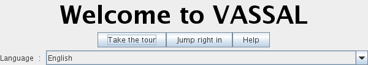
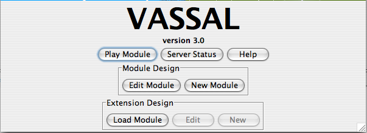

VASSAL stores all the information necessary to play a particular game in a module file. Many modules are available for download on the VASSAL Modules page, although a module file need not be hosted on the web site to be playable.

When you first run VASSAL, you will see the screen above.
Select your preferred language. The Take the tour
button will load a sample module file that demonstrates some of the key
features of the engine. After the module has loaded, hit the  Step Forward
button to step through the tour. To skip the tour, hit the Jump right in button.
Step Forward
button to step through the tour. To skip the tour, hit the Jump right in button.

From the VASSAL opening screen, you can either play a game or create a module file for others to play. The Play Module file prompts you to load a module file that you have downloaded to your local machine. The Server Status button gives you an overview of what games have been played on the live server recently. The Edit Module button will open a module file in the module editor. The Import Module button will allow you to load modules made by other programs (currently only Aide de Camp 2 can be imported), while the New Module button creates a new module file from scratch. VASSAL modules support extensions, which encapsulate optional extensions to a module and can be distributed independently of the original module file. Extensions are loaded automatically when playing a module. To edit or create an extension, hit the Load Module button to load the base module file, then hit the Edit button to edit an existing extension or New to create a new one.Online documentation is available on the wiki.
Enjoy!
rk